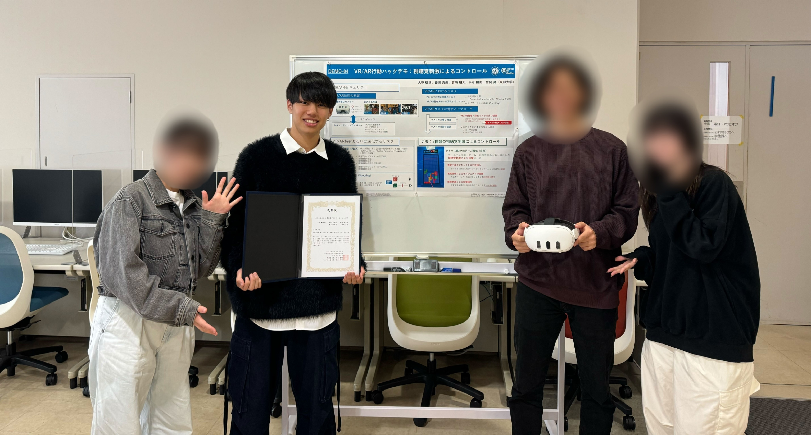

Publication
Awards & Grants / Papers / その他
Awards & Grants
- 受賞: CSS2025エシカルプラクティス賞 コンピュータセキュリティシンポジウム（CSS）2025 『VR における視点操作攻撃：空間音響を悪用した攻撃の実証と考察』
- 受賞: CSS2025コンセプト研究賞 コンピュータセキュリティシンポジウム（CSS）2025 『VR における視点操作攻撃：空間音響を悪用した攻撃の実証と考察』
- 受賞: 最優秀デモンストレーション章 コンピュータセキュリティシンポジウム（CSS）2024 『VR/AR行動ハックデモ：視聴覚刺激によるコントロール』
- 外部資金: JST CREST AIPチャレンジ2024採択（金額：100万円） 『聴覚刺激によるHMDカメラ視界操作の可能性とリスクの研究』

Papers
Main Author
- (受賞) 大塚 航世, 倉﨑 翔大, 藤田 真由, 金岡 晃. “VR における視点操作攻撃：空間音響を悪用した攻撃の実証と考察”, コンピュータセキュリティシンポジウム（CSS）2025, 2025.
- Kousei Otsuka, & Akira Kanaoka. “Auditory Stimulus Attack in XR: Stimulus Characteristics and Technical Background Considerations”, In 3rd IEEE International Conference on Metaverse Computing, Networking and Applications (MetaCom2025), 2025.
- 大塚 航世, 金岡 晃. “XR における聴覚刺激攻撃：刺激の特性と技術的背景からの考察”, 第58回セキュリティ心理学とトラスト（SPT）研究発表会, 2025.
- 新井 太陽, 大塚 航世, 金岡 晃. “シーングラフ階層を活用した3Dオブジェクト電子署名と効率的部分検証方式”, コンピュータセキュリティシンポジウム（CSS）2025, 2025.
- 倉﨑 翔大, 清水 澪, 秋山 晃誠, 藤田 真由, 大塚 航世, 金岡 晃. “XR HMDの外向きカメラを介した周辺文字情報の漏洩リスクの評価”, コンピュータセキュリティシンポジウム（CSS）2025, 2025.
- 鈴木 裕友, 大塚 航世, 藤田 真由, 倉﨑 翔大, 森 亮太, 金岡 晃, 大東 俊博, 大木 哲史. “VR/AR空間における既知攻撃の技術的実現性の検証とリスク要因の整理”, コンピュータセキュリティシンポジウム（CSS）2025, 2025.
- 金岡 晃, 森 亮太, 大塚 航世, 倉﨑 翔大, 大木 哲史, 大東 俊博, 磯原 隆将. “VR/AR環境におけるセキュリティ脅威と攻撃対象領域の体系的分析”, 暗号と情報セキュリティシンポジウム (SCIS) 2025, 2025.
Co-Author
その他
- デモンストレーション発表: 藤田 真由, 清水 友哉, 手老 陽南, 手老 陽南, 大塚 航世, 倉﨑 翔大, 金岡 晃. “VR環境における3Dオブジェクト偽装の識別”, コンピュータセキュリティシンポジウム（CSS）2025, 2025.
- ポスター発表: 大塚 航世, 金岡 晃. “XRにおける聴覚刺激攻撃：刺激の特性と技術的背景からの考察”, JST CREST 領域横断シンポジウム 現実/幻覚とバーチャル・リアリティ, 2025.
- デモンストレーション発表: 金岡 晃, 手老 陽南, 大塚 航世, 藤田 真由, 倉﨑 翔大. “VR/AR における認知的リスクの可視化：セキュリティ意識向上のためのデモンストレーション”, INTERACTION 2025, 2025.
- (受賞) デモンストレーション発表: 大塚 航世, 藤田 真由, 倉﨑 翔大, 手老 陽南, 金岡 晃. “VR/AR行動ハックデモ：視聴覚刺激によるコントロール”, コンピュータセキュリティシンポジウム（CSS）2024, 2024.